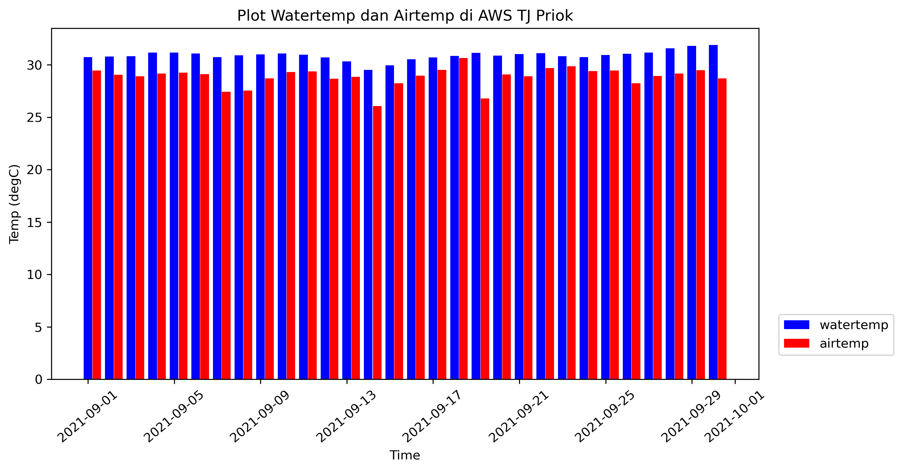
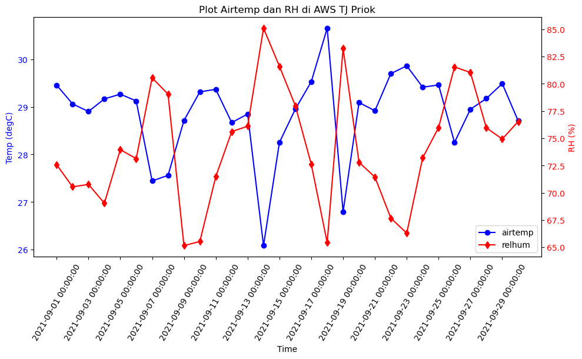
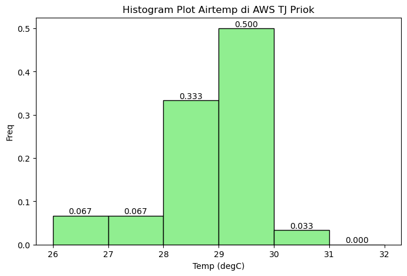
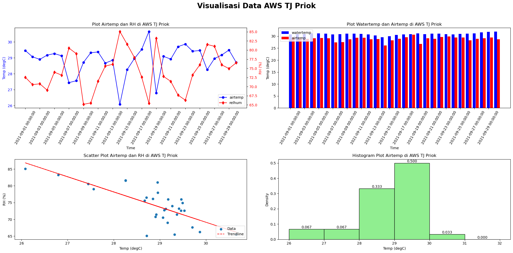

Data visualization#
Setelah membaca ini, pembaca diharapkan mampu memvisualisasikan data meteorologi maritim dalam bentuk grafik dan plot sederhana.
# Load libraries and data
import pandas as pd
import matplotlib.pyplot as plt
import datetime
import numpy as np
df = pd.read_csv('aws_priok_202109.csv')
df['time'] = pd.to_datetime(df['time'])
df = df.resample('1D', on='time').mean()
df.head()
---------------------------------------------------------------------------
FileNotFoundError Traceback (most recent call last)
Cell In[1], line 8
5 import datetime
6 import numpy as np
----> 8 df = pd.read_csv('aws_priok_202109.csv')
9 df['time'] = pd.to_datetime(df['time'])
10 df = df.resample('1D', on='time').mean()
File /opt/conda/envs/ofs/lib/python3.13/site-packages/pandas/io/parsers/readers.py:1026, in read_csv(filepath_or_buffer, sep, delimiter, header, names, index_col, usecols, dtype, engine, converters, true_values, false_values, skipinitialspace, skiprows, skipfooter, nrows, na_values, keep_default_na, na_filter, verbose, skip_blank_lines, parse_dates, infer_datetime_format, keep_date_col, date_parser, date_format, dayfirst, cache_dates, iterator, chunksize, compression, thousands, decimal, lineterminator, quotechar, quoting, doublequote, escapechar, comment, encoding, encoding_errors, dialect, on_bad_lines, delim_whitespace, low_memory, memory_map, float_precision, storage_options, dtype_backend)
1013 kwds_defaults = _refine_defaults_read(
1014 dialect,
1015 delimiter,
(...) 1022 dtype_backend=dtype_backend,
1023 )
1024 kwds.update(kwds_defaults)
-> 1026 return _read(filepath_or_buffer, kwds)
File /opt/conda/envs/ofs/lib/python3.13/site-packages/pandas/io/parsers/readers.py:620, in _read(filepath_or_buffer, kwds)
617 _validate_names(kwds.get("names", None))
619 # Create the parser.
--> 620 parser = TextFileReader(filepath_or_buffer, **kwds)
622 if chunksize or iterator:
623 return parser
File /opt/conda/envs/ofs/lib/python3.13/site-packages/pandas/io/parsers/readers.py:1620, in TextFileReader.__init__(self, f, engine, **kwds)
1617 self.options["has_index_names"] = kwds["has_index_names"]
1619 self.handles: IOHandles | None = None
-> 1620 self._engine = self._make_engine(f, self.engine)
File /opt/conda/envs/ofs/lib/python3.13/site-packages/pandas/io/parsers/readers.py:1880, in TextFileReader._make_engine(self, f, engine)
1878 if "b" not in mode:
1879 mode += "b"
-> 1880 self.handles = get_handle(
1881 f,
1882 mode,
1883 encoding=self.options.get("encoding", None),
1884 compression=self.options.get("compression", None),
1885 memory_map=self.options.get("memory_map", False),
1886 is_text=is_text,
1887 errors=self.options.get("encoding_errors", "strict"),
1888 storage_options=self.options.get("storage_options", None),
1889 )
1890 assert self.handles is not None
1891 f = self.handles.handle
File /opt/conda/envs/ofs/lib/python3.13/site-packages/pandas/io/common.py:873, in get_handle(path_or_buf, mode, encoding, compression, memory_map, is_text, errors, storage_options)
868 elif isinstance(handle, str):
869 # Check whether the filename is to be opened in binary mode.
870 # Binary mode does not support 'encoding' and 'newline'.
871 if ioargs.encoding and "b" not in ioargs.mode:
872 # Encoding
--> 873 handle = open(
874 handle,
875 ioargs.mode,
876 encoding=ioargs.encoding,
877 errors=errors,
878 newline="",
879 )
880 else:
881 # Binary mode
882 handle = open(handle, ioargs.mode)
FileNotFoundError: [Errno 2] No such file or directory: 'aws_priok_202109.csv'
# Ambil parameter temp dan watertemp
df = df[['rh','temp','watertemp']]
df
| rh | temp | watertemp | |
|---|---|---|---|
| time | |||
| 2021-09-01 | 72.573371 | 29.460338 | 30.752212 |
| 2021-09-02 | 70.542498 | 29.064415 | 30.808327 |
| 2021-09-03 | 70.765353 | 28.904549 | 30.836240 |
| 2021-09-04 | 69.039739 | 29.169870 | 31.168078 |
| 2021-09-05 | 73.956325 | 29.269753 | 31.169611 |
| 2021-09-06 | 73.130916 | 29.126870 | 31.075267 |
| 2021-09-07 | 80.551849 | 27.442912 | 30.733359 |
| 2021-09-08 | 79.045159 | 27.560707 | 30.899647 |
| 2021-09-09 | 65.145878 | 28.714809 | 31.008702 |
| 2021-09-10 | 65.530705 | 29.318726 | 31.098408 |
| 2021-09-11 | 71.481535 | 29.371063 | 30.972502 |
| 2021-09-12 | 75.613602 | 28.671599 | 30.698580 |
| 2021-09-13 | 76.104721 | 28.851062 | 30.327695 |
| 2021-09-14 | 85.098460 | 26.080956 | 29.531442 |
| 2021-09-15 | 81.604671 | 28.254211 | 29.948832 |
| 2021-09-16 | 77.980704 | 28.956273 | 30.545194 |
| 2021-09-17 | 72.613714 | 29.531505 | 30.697183 |
| 2021-09-18 | 65.422942 | 30.657356 | 30.856830 |
| 2021-09-19 | 83.249879 | 26.794903 | 31.142961 |
| 2021-09-20 | 72.800731 | 29.093348 | 30.881287 |
| 2021-09-21 | 71.432129 | 28.920660 | 31.035428 |
| 2021-09-22 | 67.668648 | 29.701982 | 31.107077 |
| 2021-09-23 | 66.292313 | 29.866471 | 30.829209 |
| 2021-09-24 | 73.204901 | 29.416167 | 30.746891 |
| 2021-09-25 | 75.983845 | 29.463596 | 30.942690 |
| 2021-09-26 | 81.547313 | 28.254031 | 31.062023 |
| 2021-09-27 | 81.034595 | 28.951628 | 31.186374 |
| 2021-09-28 | 75.958053 | 29.176940 | 31.569693 |
| 2021-09-29 | 74.932884 | 29.491690 | 31.825426 |
| 2021-09-30 | 76.530015 | 28.707980 | 31.900073 |
Line & Bar Plot#
# LINE PLOT
plt.figure(figsize=(10,5), dpi=300)
plt.plot(df.index, df['watertemp'], color='b', marker='o', label='watertemp')
plt.plot(df.index, df['temp'], color='r', marker='d', label='airtemp')
plt.xticks(rotation=40)
plt.xlabel("Time")
plt.ylabel("Temp (degC)")
plt.title("Plot Watertemp dan Airtemp di AWS TJ Priok")
plt.legend(loc='lower right')
<matplotlib.legend.Legend at 0x7f2538c67ed0>
# BAR PLOT
width = 0.2
plt.figure(figsize=(10,5), dpi=300)
plt.bar(df.index-datetime.timedelta(hours=5), df['watertemp'], color='b', label='watertemp', align='edge', width=0.4)
plt.bar(df.index+datetime.timedelta(hours=5), df['temp'], color='r', label='airtemp', align='edge', width=0.4)
plt.xticks(rotation=40)
plt.xlabel("Time")
plt.ylabel("Temp (degC)")
plt.title("Plot Watertemp dan Airtemp di AWS TJ Priok")
plt.legend(loc='lower right', bbox_to_anchor=(1.2,0.05))
fig.tight_layout()
plt.show()

# LINE PLOT 2 AXES
fig, ax1 = plt.subplots(figsize=(10,5))
line1, = ax1.plot(df.index, df['temp'], color='b', marker='o', label='airtemp')
ax1.set_xlabel("Time")
ax1.set_ylabel("Temp (degC)", color='b')
ax1.tick_params(axis='y', labelcolor='b')
plt.legend(loc='lower right')
ax2 = ax1.twinx()
line2, = ax2.plot(df.index, df['rh'], color='r', marker='d', label='relhum')
ax2.set_ylabel("RH (%)", color='r')
ax2.tick_params(axis='y', labelcolor='r')
plt.title("Plot Airtemp dan RH di AWS TJ Priok")
lines = [line1, line2]
labels = [line.get_label() for line in lines]
ax1.legend([line1, line2], labels, loc='lower right')
fig.tight_layout()
ax1.set_xticks(ticks=df.index[::2], labels= df.index[::2], rotation=60)
plt.show()

Scatter Plot#
fig, ax = plt.subplots(figsize=(10,5))
ax.scatter(df['temp'], df['rh'])
ax.set_xlabel("Temp (degC)")
ax.set_ylabel("RH (%)")
plt.title("Scatter Plot Airtemp dan RH di AWS TJ Priok")
plt.legend(loc='lower right')
z = np.polyfit(df['temp'], df['rh'], 1)
p = np.poly1d(z)
ax.plot(df['temp'],p(df['temp']),"r--")
plt.show()
/tmp/ipykernel_31756/3468112991.py:7: UserWarning: No artists with labels found to put in legend. Note that artists whose label start with an underscore are ignored when legend() is called with no argument.
plt.legend(loc='lower right')
import pooch
import numpy as np
import matplotlib.pyplot as plt
fname = pooch.retrieve(
"https://rabernat.github.io/research_computing/signif.txt.tsv.zip",
known_hash='22b9f7045bf90fb99e14b95b24c81da3c52a0b4c79acf95d72fbe3a257001dbb',
processor=pooch.Unzip()
)[0]
earthquakes = np.genfromtxt(fname, delimiter='\t')
depth = earthquakes[:, 8]
magnitude = earthquakes[:, 9]
latitude = earthquakes[:, 20]
longitude = earthquakes[:, 21]
plt.scatter(longitude, latitude, c=magnitude, cmap='viridis')
plt.colorbar()
<matplotlib.colorbar.Colorbar at 0x7fa4c68c3230>
Histogram#
fig, ax = plt.subplots(figsize=(8,5))
counts, bins, patches = ax.hist(df['temp'], density=True, range=(26,32), color='lightgreen', edgecolor='black', bins=6)
for count, bin_start in zip(counts, bins):
bin_center = bin_start + (bins[1] - bins[0])/2
ax.text(bin_center, count, f"{count:.3f}", horizontalalignment='center', verticalalignment='bottom')
ax.set_xlabel("Temp (degC)")
ax.set_ylabel("Density")
plt.title("Histogram Plot Airtemp di AWS TJ Priok")
plt.show()

Multiple Plot#
fig, ax = plt.subplots(figsize=(20, 10), ncols=2, nrows=2)
# =======================================================================================
# Top-left: Time series with dual y-axis
line1, = ax[0,0].plot(df.index, df['temp'], color='b', marker='o', label='airtemp')
ax[0,0].set_xlabel("Time")
ax[0,0].set_ylabel("Temp (degC)", color='b')
ax[0,0].tick_params(axis='y', labelcolor='b')
ax[0,0].set_title("Plot Airtemp dan RH di AWS TJ Priok")
ax[0,0].set_xticks(df.index[::2])
ax[0,0].set_xticklabels(df.index[::2], rotation=60)
ax00copy = ax[0,0].twinx()
line2, = ax00copy.plot(df.index, df['rh'], color='r', marker='d', label='relhum')
ax00copy.set_ylabel("RH (%)", color='r')
ax00copy.tick_params(axis='y', labelcolor='r')
lines = [line1, line2]
labels = [line.get_label() for line in lines]
ax[0,0].legend(lines, labels, loc='lower right')
# =======================================================================================
# Top-right: Grouped bar plot
width = 0.2
ax[0,1].bar(df.index - datetime.timedelta(hours=5), df['watertemp'], color='b', label='watertemp', align='edge', width=0.4)
ax[0,1].bar(df.index + datetime.timedelta(hours=5), df['temp'], color='r', label='airtemp', align='edge', width=0.4)
ax[0,1].set_xticks(df.index[::2])
ax[0,1].set_xticklabels(df.index[::2], rotation=60)
ax[0,1].set_xlabel("Time")
ax[0,1].set_ylabel("Temp (degC)")
ax[0,1].set_title("Plot Watertemp dan Airtemp di AWS TJ Priok")
ax[0,1].legend(loc='upper left')
# =======================================================================================
# Bottom-left: Scatter plot with trendline
ax[1,0].scatter(df['temp'], df['rh'], label='Data')
ax[1,0].set_xlabel("Temp (degC)")
ax[1,0].set_ylabel("RH (%)")
ax[1,0].set_title("Scatter Plot Airtemp dan RH di AWS TJ Priok")
z = np.polyfit(df['temp'], df['rh'], 1)
p = np.poly1d(z)
ax[1,0].plot(df['temp'], p(df['temp']), "r--", label='Trendline')
ax[1,0].legend(loc='lower right')
# =======================================================================================
# Bottom-right: Histogram
counts, bins, patches = ax[1,1].hist(df['temp'], density=True, range=(26, 32), color='lightgreen', edgecolor='black', bins=6)
for count, bin_start in zip(counts, bins[:-1]): # bins[:-1] because len(bins) = len(counts)+1
bin_center = bin_start + (bins[1] - bins[0])/2
ax[1,1].text(bin_center, count, f"{count:.3f}", ha='center', va='bottom')
ax[1,1].set_xlabel("Temp (degC)")
ax[1,1].set_ylabel("Density")
ax[1,1].set_title("Histogram Plot Airtemp di AWS TJ Priok")
# =======================================================================================
fig.suptitle("Visualisasi Data AWS TJ Priok", fontsize=20, fontweight='bold')
plt.tight_layout(rect=[0, 0, 1, 0.96])
# plt.tight_layout()
plt.show()
